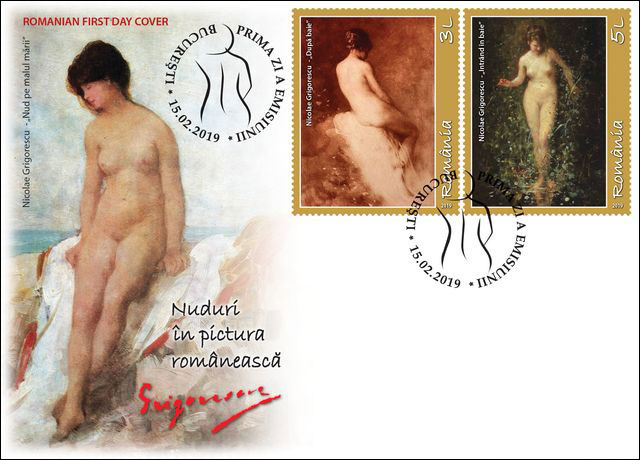
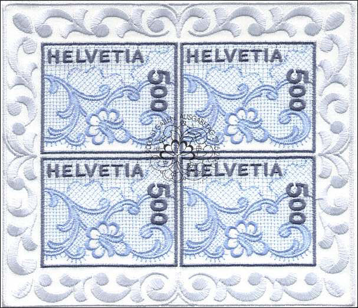
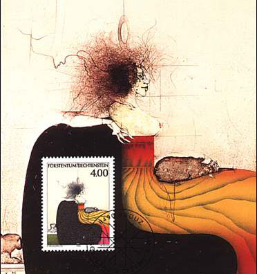
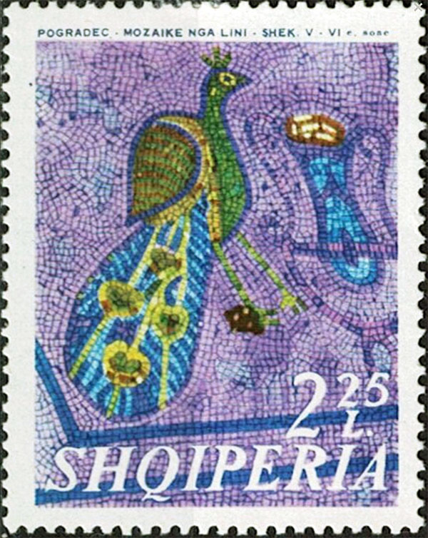
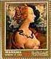
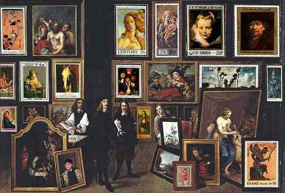

This historical introduction originally used Adobe Flash, which modern browsers no longer support. The original intro.swf and intro1.swf files are preserved in the archive. The images below are authentic files from this section, presented as a static gallery; they are not a reconstruction of the original animation.
Images preserved with the introduction





